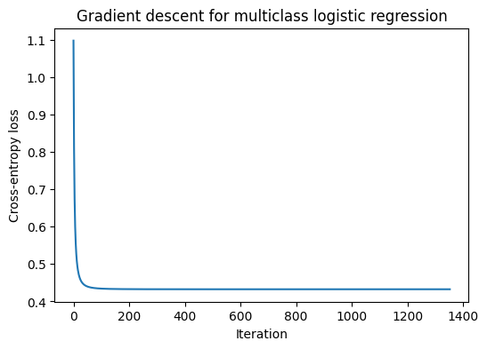
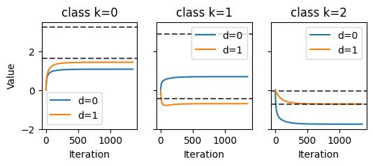
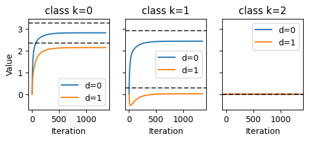

These materials were developed with assistance from AI tools. All content has been reviewed and edited by the instructor, who takes final responsibility for its accuracy, clarity, and appropriateness for the course. Students should treat these materials as instructor-reviewed course content while applying the same critical judgment they would use with any technical material. Please report any suspected errors or unclear explanations to ghunt@wm.edu.
Logistic regression extends naturally from the binary case to the case of \(K > 2\) classes. The basic idea is the same: we build linear scores from the input, turn those scores into probabilities, and then fit the parameters by minimizing cross-entropy loss.
Throughout, let the response take values in \[
y \in \{1,2,\dots,K\},
\] and let the input be \(x \in \mathbb{R}^D\).
Instead of using a single score function, we now use one score for each class: \[
s_k(x) = w_k^\top x, \qquad k=1,\dots,K.
\] Collecting these together gives a score vector \[
s(x) =
\begin{pmatrix}
w_1^\top x \\
\vdots \\
w_K^\top x
\end{pmatrix}
\in \mathbb{R}^K.
\]
The interpretation is simple: larger score for class \(k\) should mean class \(k\) is more plausible for that input.
The prediction rule is \[
\hat y(x) = \arg\max_{1 \le k \le K} s_k(x)
= \arg\max_{1 \le k \le K} w_k^\top x.
\]
6.1 One-Hot Encoding and Loss
It is convenient to encode the class label as a one-hot vector\[
t = (t_1,\dots,t_K)^\top \in \{0,1\}^K,
\] where exactly one component equals 1. If the observation belongs to class \(c\) so that \(y=c\) then \(t_c = 1\) and all other coordinates are 0. Note that \(y\) and \(t\) are in one-to-one relation, so we’ll switch between them with impunity.
To define a loss function we first convert the scores into probabilities, we use the softmax map: \[
p_k(x)=\frac{e^{w_k^\top x}}{\sum_{j=1}^K e^{w_j^\top x}},
\qquad k=1,\dots,K.
\]
A few basic facts aout what softmax does:
each \(p_k(x)\) is positive
the probabilities sum to 1
the class with the largest probability is the same as the class with the largest score (monotonicity)
This is the multiclass analogue of the sigmoid link in binary logistic regression.
Given predicted probabilities \(p(x) = (p_1(x),\dots,p_K(x))^\top\), the multiclass cross-entropy loss is defined as \[
\ell(t, p(x)) =
-\sum_{k=1}^K t_k \log p_k(x).
\]
Because only one component of \(t\) is nonzero, this just selects the log-probability assigned to the correct class. If the true class is \(y=c\), then \[
\ell(y, p(x)) = \ell(c, p(x)) = -\log p_c(x) = -\log p_y(x).
\]
So the loss is small when the model assigns large probability to the correct class, and large when it does not.
Substituting the softmax formula gives a clean expression in terms of the linear scores. If the true class is \(c\), then \[
\ell(y, s(x)) =
-\log \left(
\frac{e^{w_c^\top x}}{\sum_{j=1}^K e^{w_j^\top x}}
\right) =
\log \left( \sum_{j=1}^K e^{w_j^\top x} \right) - w_c^\top x.
\]
This is sometimes also called the multinomial logistic loss or softmax loss, but more commonly the categorical cross entropy loss.
6.2 ERM Formulation
Now suppose we observe data \[
(x_1,y_1),\dots,(x_N,y_N),
\] with each \(y_n\) encoded as a one-hot vector in \(t_n \in\mathbb{R}^K\).
Let \[
W =
\begin{pmatrix}
\vert & & \vert \\
w_1 & \cdots & w_K \\
\vert & & \vert
\end{pmatrix}
\in \mathbb{R}^{D \times K}
\] be the parameter matrix whose \(k\)-th column is \(w_k \in \mathbb{R}^D\).
For a single input \(x_n\), the score vector is \[
W^\top x_n \in \mathbb{R}^K,
\] and the predicted probability vector is \[
p(x_n;W) = \mathrm{softmax}(W^\top x_n).
\]
The empirical risk is then \[
\hat R(W)=
\frac{1}{N}\sum_{n=1}^N
\left[
-\sum_{k=1}^K t_{nk} \log p_k(x_n;W)
\right].
\]
Our goal is to solve \[
\hat W = \arg\min_W \hat R(W).
\]
6.3 Matrix Form
Let
\(X \in \mathbb{R}^{N \times D}\) be the design matrix, with row \(n\) equal to \(x_n^\top\)
\(T \in \mathbb{R}^{N \times K}\) be the matrix of one-hot labels
\(Z = XW \in \mathbb{R}^{N \times K}\) be the matrix of class scores
\(P = \mathrm{softmax}(Z)\), where softmax is applied rowwise (in a slight abuse of notation)
Then row \(n\) of \(P\) contains the predicted class probabilities for observation \(n\).
In this notation, the empirical risk becomes \[
\hat R(W)=-\frac{1}{N}
\sum_{n=1}^N \sum_{k=1}^K
T_{nk} \log P_{nk}.
\]
This is very similar to the binary logistic regression objective, except that the scalar sigmoid probabilities are replaced by row vectors of softmax probabilities.
6.4 Identifiability Issues
As previously, there are some identifiability issues. If we add the same vector \(a \in \mathbb{R}^D\) to every class weight vector, then the probabilities do not change: \[
w_k \mapsto w_k + a \qquad \text{for all } k.
\]
Why? Because each score increases by the same amount \(a^\top x\), and softmax is unchanged when the same constant is added to all coordinates.
So the parameterization is redundant: many different matrices \(W\) define exactly the same classifier.
Common ways to handle this are:
fix one class as a reference class, for example set \(w_K = 0\) (classical manner)
rely on numerical solvers that handle the redundancy internally (modern ML YOLO lifestyle)
Note that this issue affects the parameters and their optimization, not the predicted probabilities. Modern thinking: if we are happy enough with our optimizer results (they’re not too unstable) then its probably not a big deal. The more classical thinking says that we want to interpret coefficients, so its better just to pin a “base class”.
6.5 Gradient Descent
As before, the objective is not quadratic in the parameters, so there is no normal-equation style formula for \(\hat W\).
We therefore use an iterative optimization method such as:
gradient descent
Newton or quasi-Newton methods
stochastic gradient methods
The good news is that the gradient still has a very clean form.
We first compute the gradient of the empirical risk with respect to the whole matrix \(W\).
For softmax, a standard derivative identity is \[
\frac{\partial P_{na}}{\partial Z_{nb}} =
P_{na}(\mathbf{1}\{a=b\} - P_{nb}).
\]
Using this together with the chain rule, the gradient of the empirical risk is \[
\nabla_W \hat R(W) =
\frac{1}{N} X^\top (P - T).
\]
This is nicely similar to what we derived in the binary classification case. Isn’t that nice!? It has almost exactly the same shape as in the binary case. The only difference is that now the residual is matrix-valued: \[
P - T \in \mathbb{R}^{N \times K}.
\]
So gradient descent takes the form \[
W^{(t+1)}=
W^{(t)} - \eta \frac{1}{N} X^\top (P^{(t)} - T),
\] where \[
P^{(t)} = \mathrm{softmax}(X W^{(t)}).
\]
Each iteration is:
compute the score matrix \(XW^{(t)}\)
apply the rowwise softmax to obtain \(P^{(t)}\)
compute the gradient \(\frac{1}{N}X^\top(P^{(t)} - T)\)
update \(W\)
This is a direct generalization of binary logistic regression. (Here, we are ignoring the parameterization issue.)
Show code
import numpy as npimport matplotlib.pyplot as pltdef softmax(scores): scores = np.asarray(scores)# numerical stability hack shifted = scores - np.max(scores, axis=-1, keepdims=True) exps = np.exp(shifted)return exps / np.sum(exps, axis=-1, keepdims=True)def cross_entropy_onehot(t, p):return-np.sum(t * np.log(p))def softmax_loss(X, T, W): scores = X @ W P = softmax(scores)return-np.sum(T * np.log(P)) / X.shape[0]def softmax_gradient(X, T, W): P = softmax(X @ W)return X.T @ (P - T) / X.shape[0]def softmax_regression_gd(X, T, W0=None, eta=0.1, max_iter=5000, tol=1e-8): n_features = X.shape[1] n_classes = T.shape[1] W = np.zeros((n_features, n_classes)) if W0 isNoneelse W0.copy() W_hist = [W] loss_history = [softmax_loss(X, T, W)]for _ inrange(max_iter): grad = softmax_gradient(X, T, W) W = W - eta * grad W_hist.append(W) loss_history.append(softmax_loss(X, T, W))if np.linalg.norm(grad) < tol:breakreturn W, np.array(loss_history), W_hist
Show code
import matplotlib.pyplot as pltdef one_hot(y, K): T = np.zeros((len(y), K)) T[np.arange(len(y)), y] =1return T
Show code
def simulate_softmax_data(n=300, d=2, K=3, W_true=None, seed=None): rng = np.random.default_rng(seed)# covariates X = rng.normal(size=(n, d))# add intercept X = np.column_stack([np.ones(n), X])# true parameter matrix W_true = rng.normal(loc=1,scale=1.5,size=(d+1,K)) P = softmax(X @ W_true) y = np.array([rng.choice(K, p=P[i]) for i inrange(n)]) T = one_hot(y, K)return X, y, T, W_true, P
Show code
D =2K =3X, y, T, W_true, P_true = simulate_softmax_data(n=1000, d=D, K=K, seed=None)
print("Training loss at truth: ", softmax_loss(X, T, W_true))print("Training loss at estimate:", softmax_loss(X, T, W_hat))print("Training classification error at truth: ", classification_error(y, np.argmax(P_true, axis=1)))print("Training classification error at estimate:", classification_error(y, y_hat))
Training loss at truth: 0.43424068806904575
Training loss at estimate: 0.4325506245748017
Training classification error at truth: 0.164
Training classification error at estimate: 0.163
Show code
plt.figure(figsize=(6,4))plt.plot(loss_hist)plt.xlabel("Iteration")plt.ylabel("Cross-entropy loss")plt.title("Gradient descent for multiclass logistic regression")plt.show()

We can see how these converge over the iterations, though its a bit more difficult than in the binary case.
Show code
W_hist = np.array(W_hist)
Show code
W_hist.shape
(1353, 3, 3)
Show code
fig, axes = plt.subplots(1, K, figsize=(D*K, D), sharey=True)for k inrange(K): ax = axes[k] if K >1else axesfor d inrange(D): ax.plot(W_hist[:, d, k], label=f"d={d}") ax.axhline(W_true[d, k], linestyle='--', color='black', alpha=0.7) ax.set_title(f"class k={k}") ax.set_xlabel("Iteration")if k ==0: ax.set_ylabel("Value") ax.legend()plt.show()

We really need to contend with some non-identifiabiltiy issues if we want to compare against the dashed “true” lines.
If we use the last class as the identifiability constraint, we subtract that column from all the others in \(W\).
Show code
k_ref = K-1fig, axes = plt.subplots(1, K, figsize=(D*K, D), sharey=True)for k inrange(K): ax = axes[k] if K >1else axesfor d inrange(D): ax.plot(W_hist[:, d, k] - W_hist[:, d, k_ref], label=f"d={d}") ax.axhline(W_true[d, k] - W_true[d, k_ref], linestyle='--', color='black', alpha=0.7) ax.set_title(f"class k={k}") ax.set_xlabel("Iteration")if k ==0: ax.set_ylabel("Value") ax.legend()plt.show()

Notice how the \(K=3\) reference class now has zeroed out weights.
6.6 Decision Rule and Decision Boundaries
The prediction rule is \[
\hat y(x) = \hat{f}(x) = \arg\max_k w_k^\top x.
\]
This means the boundary between classes \(a\) and \(b\) is determined by where their scores tie: \[
w_a^\top x = w_b^\top x.
\]
Equivalently, \[
(w_a - w_b)^\top x = 0.
\]
So with raw linear features, the boundary between any pair of classes is still linear. In multiclass logistic regression, the input space gets partitioned into several regions, (at most) one region per class, separated by pairwise linear boundaries. We’ll end up calling this a linear classifier.
/home/greg/wk/teaching/ml_dev/.venv/lib/python3.13/site-packages/sklearn/linear_model/_logistic.py:1170: UserWarning: Setting penalty=None will ignore the C and l1_ratio parameters
warnings.warn(
In a Jupyter environment, please rerun this cell to show the HTML representation or trust the notebook. On GitHub, the HTML representation is unable to render, please try loading this page with nbviewer.org.
/home/greg/wk/teaching/ml_dev/.venv/lib/python3.13/site-packages/sklearn/linear_model/_logistic.py:1170: UserWarning: Setting penalty=None will ignore the C and l1_ratio parameters
warnings.warn(
In a Jupyter environment, please rerun this cell to show the HTML representation or trust the notebook. On GitHub, the HTML representation is unable to render, please try loading this page with nbviewer.org.
mod = LogisticRegression(C=np.inf, solver="lbfgs", fit_intercept=True, max_iter=10000)mod.fit(X_train, y_train)
/home/greg/wk/teaching/ml_dev/.venv/lib/python3.13/site-packages/sklearn/linear_model/_logistic.py:1170: UserWarning: Setting penalty=None will ignore the C and l1_ratio parameters
warnings.warn(
LogisticRegression(C=inf, max_iter=10000)
In a Jupyter environment, please rerun this cell to show the HTML representation or trust the notebook. On GitHub, the HTML representation is unable to render, please try loading this page with nbviewer.org.
cm = confusion_matrix(y_test, y_pred)plt.figure(figsize=(6,5))plt.imshow(cm)plt.title("Confusion matrix")plt.xlabel("Predicted")plt.ylabel("True")plt.colorbar()plt.show()
There are two common ways to extend binary logistic regression to multiple classes.
One-vs-rest
Fit \(K\) separate binary classifiers:
class 1 versus not class 1: \(s_1\)
class 2 versus not class 2: \(s_2\)
and so on
This is simple, but the resulting score functions need not fit together as a single coherent multiclass model. We can still do something like:
\[
\hat{y} = \hat{f}(x) = \arg\max_k s_k(x)
\]
and it tends to work reasonably well.
Multinomial logistic regression What we have done here.
6.10 Linear classifiers.
In general, we call any classifier a linear classifier if it can be written such that for class \(k\), we compute \[
s_k(x) = h(w_k^\top x),
\] where \(w_k \in \mathbb{R}^D\) and \(h:\mathbb{R}\to\mathbb{R}\) is a strictly increasing function.
Because \(h\) is strictly increasing, it preserves order. This means the predicted class \[
\hat{f}(x) = \arg\max_k s_k(x)
\] is unchanged if we replace \(s_k(x)\) by \(w_k^\top x\). In other words, the decision rule depends only on the linear functions \(w_k^\top x\).
As a result, linear classifiers partition the input space using linear decision boundaries. To see this, consider two classes \(k\) and \(j\). The boundary between them is given by the set of points where their scores are equal: \[
s_k(x) = s_j(x).
\] Since \(h\) is monotone, this is equivalent to \[
w_k^\top x = w_j^\top x,
\] or \[
(w_k - w_j)^\top x = 0.
\] This is a linear equation in \(x\), so the boundary is a hyperplane.